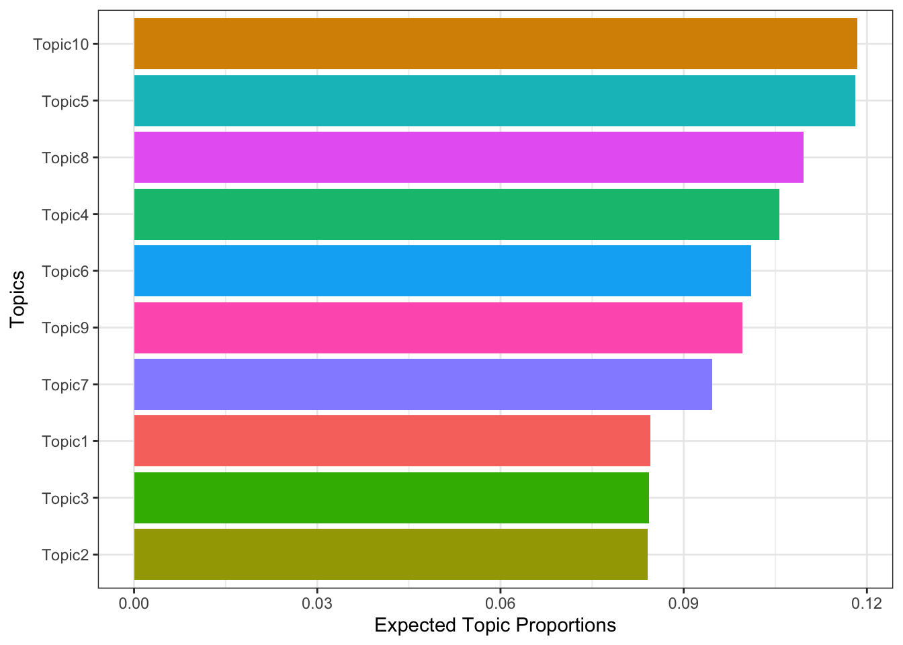

library(tidyverse)
library(quanteda)
library(tidytext)
library(stm)
library(stminsights)Week 10 Lab
Topic modeling
Weighting: “Bag-of-words” and tf-idf
As you may recall, we previously discussed the “bag-of-words” approach, which involves converting a corpus into a document-term matrix (DTM) where each value represents a count. In many cases, it is beneficial to convert count data into logged count data. This transformation can be accomplished using the dfm_weight command here. The most commonly used weighting scheme is term frequency-inverse document frequency (tf-idf). The general idea is to take a term frequency or logged term frequency and downweight that according to (logged) document frequency. The intuition is that the most important words are those that are used a lot in a given document but relatively rare in the corpus overall. Mathematically, the tf-idf is:

If we would like to translate into layman language:
\[ term\; frequency = \frac{number\; of\; times\; the\; term\; appears\; in\; the\; document}{total\; number\; of\; terms\; in\; the\; document} \] \[ inverse\; document\; frequency = \log(\frac{number\; of\; the\; documents\; in\; the\; corpus}{number\; of\; documents\; in\; the\; corpus\; contain\; the\; term}) \] \[ TF-IDF = TF * IDF \] With tf-idf, the importance of a term is high when it occurs a lot in a given document and rarely in others. In short, commonality within a document measured by TF is balanced by rarity between documents measured by IDF. The resulting TF-IDF score reflects the importance of a term for a document in the corpus. Let’s use Maya Angelou’s Caged Birdas an illustration again:
texts <- c(
"The caged bird sings with a fearful trill",
"for the caged bird sings of freedom",
"The free bird thinks of another breeze")
dtm <- tokens(texts) %>% dfm()
dtm_tfidf <- dfm_tfidf(dtm)
convert(dtm, "matrix") features
docs the caged bird sings with a fearful trill for of freedom free thinks
text1 1 1 1 1 1 1 1 1 0 0 0 0 0
text2 1 1 1 1 0 0 0 0 1 1 1 0 0
text3 1 0 1 0 0 0 0 0 0 1 0 1 1
features
docs another breeze
text1 0 0
text2 0 0
text3 1 1convert(dtm_tfidf, "matrix") features
docs the caged bird sings with a fearful trill
text1 0 0.1760913 0 0.1760913 0.4771213 0.4771213 0.4771213 0.4771213
text2 0 0.1760913 0 0.1760913 0.0000000 0.0000000 0.0000000 0.0000000
text3 0 0.0000000 0 0.0000000 0.0000000 0.0000000 0.0000000 0.0000000
features
docs for of freedom free thinks another breeze
text1 0.0000000 0.0000000 0.0000000 0.0000000 0.0000000 0.0000000 0.0000000
text2 0.4771213 0.1760913 0.4771213 0.0000000 0.0000000 0.0000000 0.0000000
text3 0.0000000 0.1760913 0.0000000 0.4771213 0.4771213 0.4771213 0.4771213Topic modeling
Topic modeling essentially is a cluster technique which is used to identify patterns in data. In other words, the idea here is similar to k-means clustering or principal component analysis (for non-textual data): by understanding the regularities in the data (which cases or variables behave similarly), we can describe the relevant information in the data with fewer data points. Moreover, assuming that the regularities capture interesting information and the deviations from these regularities are mostly uninteresting noise, these clusters of cases or variables can actually be substantively informative.
As we discuss in week 7, since a document-term matrix (DTM) is a matrix, we can also apply these clustering techniques to the DTM to find groups of words or documents. In recent years, a set of models called topic models have become especially popular for the unsupervised analysis of texts. Similarily, we are going to group words and documents into topics, which consisting of words and documents that co-vary. If you see the word agriculture in a news article, there is a good chance you might find words such as farm or cattle, and there is a lower chance you will find a word like soldier. In other words, the words agriculture and farm generally occur in the same kind of documents, so they can be said to be part of the same topic. Similarly, two documents that share a lot of words are probably about the same topic, and if you know what topic a document is on (e.g., an agricultural topic), you are better able to guess what words might occur in that document (e.g., cattle).
In short, the goal of topic modeling could be summarized as: given a corpus, find a set of \(K\) topics, consisting of specific words and/or documents, that minimize the mistakes we would make if we try to reconstruct the corpus from the topics. There are tons of different algorithm you can use for topic modeling. One of the most widely used techniques is Latent Dirichlet Allocation (LDA, Blei et al., 2003). LDA renders \(K\) clusters of co-occurring terms (or the topics) with a bag-of-words approach, which assumes the order of terms and the document in the corpus is neglected in the process. Meanwhile, topics are uncorrelated with each other. The LDA makes two key assumptions:
- Documents are a mixture of topics (theta \(\theta\))
- Topics are a mixture of tokens or words (beta \(\beta\))
And, these topics using the probability distribution generate the words. In statistical language, the documents are known as the probability density (or distribution) of topics and the topics are the probability density (or distribution) of words. The following flow chart might help you with understanding the process better:


Structual topic modeling
We will be mainly using stm package (Roberts et al., 2019) for topic modeling in this tutorial (see more explanation and application on their website). The Structural Topic Model allows researchers to flexibly estimate a topic model that includes document-level metadata. Estimation is accomplished through a fast variational approximation. The stm package provides many useful features, including rich ways to explore topics, estimate uncertainty, and visualize quantities of interest. Meanwhile, its flexible searchK function and the model diagnostic metrics (i.e. semantic coherence, exclusivity, residuals, lower bound, and held-out likelihood), helps us greatly to identify the optimal \(K\) of the topic modeling. The following flow chart is a demonstration of the typical process of conducting a STM.

Again we will be using Trump’s tweets for demonstration in the following tutoiral again.
trump <- read.csv(sprintf("https://docs.google.com/uc?id=%s&export=download", "1xRKHaP-QwACMydlDnyFPEaFdtskJuBa6"))
trump_clean <- trump %>% mutate(
ID = row_number(),
day = as.numeric(as.Date(date) - as.Date("2009-05-04")),
time = case_when(
date < "2016-11-9" ~ "before",
date >= "2016-11-9" ~ "after"
),
time = as.factor(time),
### Remove all the mentions, hashtags, and url for text cleaning
clean_text = str_replace_all(text, "RT\\s*@\\w+|@\\S+", " ") %>% ### remove mentions
str_replace_all(., "#\\w+", " ") %>% ### remove hashtags
str_replace_all(., "https?://\\S+", " ") %>% ### remove URL
str_replace_all("\\W+", " ") %>% ### remove all the non-words
str_replace_all("amp", " ") %>%
tolower() %>% ### lowercase
str_squish() ## trim the white space
) %>%
select(c("ID","text", "clean_text", "day","date", "time")) %>%
filter(clean_text != "")trump_clean <- trump_clean %>%
mutate(clean_text = gsub("[^a-zA-Z0-9 ]", "", clean_text) %>% # the regular expression [^a-zA-Z0-9 ] matches any character that is not a letter (a-z or A-Z), a digit (0-9), or a space.
str_squish()) %>%
filter(clean_text != "")Pre-processing
First you will need to preprocess and convert your corpus into a format that stm can better recognize before analysis. Although using textProcessor function essentially is also a cleaning process, I would prefer to perform some clean-up using regular expression beforehand.
system.time(
processed_trump <- textProcessor(trump_clean$clean_text,
metadata=trump_clean,
lowercase = TRUE,
removestopwords = TRUE,
removenumbers = TRUE,
removepunctuation = TRUE,
stem = TRUE,
wordLengths = c(3,Inf),
sparselevel = 1,
language = "en",
verbose = TRUE,
striphtml = FALSE,
v1 = FALSE)
)Building corpus...
Converting to Lower Case...
Removing punctuation...
Removing stopwords...
Removing numbers...
Stemming...
Creating Output... user system elapsed
38.967 0.192 39.391 system.time(
trump_output <- prepDocuments(processed_trump$documents, processed_trump$vocab, processed_trump$meta)
)Removing 6102 of 15667 terms (6102 of 538995 tokens) due to frequency
Removing 39 Documents with No Words
Your corpus now has 54496 documents, 9565 terms and 532893 tokens. user system elapsed
31.105 1.895 33.073 From the output above, you probably notice that a lot of tokens (words) are remove due to frequency; and a few documents are removed due to empty value.
Fit a 10-topic model
trump_10 <-stm(trump_output$documents, trump_output$vocab, data=trump_output$meta,
K = 10, prevalence=~time + s(day),
seed = 123, verbose = T,
max.em.its = 50, init.type = "Spectral")Examining the 10-topics model
Now let’s take a look at these topics! stm uses four different metrics:
- Highest Probability: These are the words within each topic with the highest probability (inferred directly from topic-word distribution parameter ).
- FREX (FRequency and EXclusivity): Theseare the words that are both frequent and exclusive, identifying words that distinguish topics..(see
?calcfrex()) - Lift: Lift is the calculated by dividing the topic-word distribution by the empirical word count probability distribution.
- Score: Score is a metric that is used effectively in the
ldapackage.
In practice, we can use the words based on Highest Probability or FREX.
labelTopics(trump_10, n = 10)Topic 1 Top Words:
Highest Prob: never, love, know, much, call, take, support, parti, long, left
FREX: love, never, problem, knew, washington, jame, aid, spent, everybodi, fbi
Lift: boll, nessel, winger, cantor, filipino, insubordin, moreland, salaci, spade, stopthest
Score: never, love, know, much, support, take, call, russia, parti, read
Topic 2 Top Words:
Highest Prob: like, need, don, republican, world, hillari, help, give, well, aign
FREX: open, help, hillari, minist, promis, past, mail, everyth, gang, credit
Lift: alexi, empress, flatten, grucci, manor, tsipra, gump, fairest, shabaab, candi
Score: like, need, don, republican, hillari, world, help, give, well, open
Topic 3 Top Words:
Highest Prob: can, news, today, biden, done, said, made, strong, joe, use
FREX: biden, joe, court, said, use, defund, sleepi, radic, hunter, choic
Lift: affh, carney, communit, feckless, gibberish, padraig, reje, suburbia, syst, trojan
Score: can, biden, today, news, joe, said, use, made, done, won
Topic 4 Top Words:
Highest Prob: trump, just, countri, donald, watch, bad, media, report, true, poll
FREX: trump, donald, true, cruz, poll, smart, reagan, ami, got, brand
Lift: drip, beatabl, bedminist, bout, brodi, ghost, iluvamericatrump, ipso, mustard, oreo
Score: trump, donald, just, countri, watch, poll, true, media, via, bad
Topic 5 Top Words:
Highest Prob: will, great, new, even, think, show, fake, come, hous, realli
FREX: book, offic, new, hear, follow, cnn, keep, player, melania, debat
Lift: qvc, fled, aetna, foreperson, plateau, bethpag, weed, vick, unambigu, shaker
Score: great, will, new, show, think, even, tonight, interview, realli, come
Topic 6 Top Words:
Highest Prob: vote, time, big, obama, work, elect, day, best, deal, way
FREX: day, obama, turbin, florida, tweet, hope, wast, find, march, night
Lift: bread, darnel, napl, niro, warhol, gabriela, dockett, brenda, ineffici, equador
Score: vote, obama, time, work, big, elect, day, deal, best, way
Topic 7 Top Words:
Highest Prob: peopl, job, year, good, back, total, last, impeach, hard, start
FREX: economi, year, endors, congressman, enemi, berni, lower, total, consum, feder
Lift: buddhist, depo, diya, gohmert, jain, otto, rothfus, scatter, sikh, smucker
Score: peopl, year, job, good, total, back, last, economi, impeach, endors
Topic 8 Top Words:
Highest Prob: now, make, say, must, border, thing, first, ever, senat, unit
FREX: secur, border, week, general, tri, happen, sourc, global, host, attorney
Lift: cerneke, rima, episcop, warmer, apprehens, fakih, ryder, overheard, poway, colder
Score: now, make, border, say, must, first, unit, thing, secur, senat
Topic 9 Top Words:
Highest Prob: presid, one, run, win, nation, right, better, record, polit, money
FREX: run, nation, anoth, game, cont, team, agre, compani, nyc, right
Lift: businesspeopl, gag, vendetta, agata, brew, grandson, hudson, souza, aircrew, lasker
Score: presid, run, one, win, nation, right, better, polit, anoth, put
Topic 10 Top Words:
Highest Prob: thank, get, democrat, america, state, american, want, look, mani, see
FREX: china, america, american, safe, allow, yes, democrat, end, season, tax
Lift: ipad, indiscrimin, idlib, kerr, favourit, provinc, underpin, coatesvill, powerless, recep
Score: thank, get, america, democrat, american, state, want, look, mani, china plot(trump_10, n = 5)You can also dig into the top documents associated with a topic with the findThoughts function:
findThoughts(trump_10, texts = trump_output$meta$text, n = 10, topics = c(10))
Topic 10:
A very good sign is that empty hospital beds are becoming more and more prevalent. We deployed 418 Doctors, Nurses and Respiratory Therapists from the hospital ship Comfort and the Javits Convention Center to hospitals in NYC & State. Have more bed capacity than was needed. Good!
China court: Apple pays $60M to settle iPad case. China is getting away with murder. http://t.co/L4FVnlof
RT @RepAndyBiggsAZ: “To summarize: Many Democrats wanted to impeach @realDonaldTrump from the get-go. Frustrated at their inability to get...
For years you had a President who apologized for America – now you have a President who is standing up for America, and standing up for Pennsylvania. So get your friends, get your family, get your neighbors, and GET OUT AND VOTE! https://t.co/gsFSgh2KPc https://t.co/xfZtBixRkk
For years you had a President who apologized for America—now you have a President who is standing up for America! Get your friends, get your family, get your neighbors and GET OUT & VOTE! On 11/3 we must finish the job and Drain the Swamp once and for all! https://t.co/RZzSuwLUSP
So many people at the higher ends of intelligence loved my press conference performance in Helsinki. Putin and I discussed many important subjects at our earlier meeting. We got along well which truly bothered many haters who wanted to see a boxing match. Big results will come!
For years you had a President who apologized for America - now you have a President who is standing up for America, and standing up for Pennsylvania. So get your friends, get your family, get your neighbors & co-workers, and GET OUT & VOTE! Early voting has already begun — VOTE! https://t.co/9LtXuWWCRV
Will be looking into the Scott Hapgood case, and the Island of Anguilla. Something looks and sounds very wrong. I know Anguilla will want to see this case be properly and justly resolved! @foxandfriends @SteveDucey @ainsleyearhardt
The Arab League stated that it wants nothing to do with an attack on Syria, but they want us to attack.Are our leaders insane or just stupid
RT @TheCounter: First, there is no shortage of meat destined for the grocery store shelf.
It might take stores longer than usual to resto…And again, everyone loves wordcloud!
cloud(trump_10, topic = 3, scale = c(3, 0.5))plot(trump_10, type="perspectives", topics=c(2,8))After going through the top words of each topic (based on the metrics you choose) as well as the top documents, you may find it beneficial to assign labels to the topics using a qualitative approach. However, exercise caution when crafting these labels, as they have the potential to significantly impact the interpretation of your analysis. Here are what I might label the 10 topics above:
- Topic 1: Accusations of political deception
- Topic 2: Border conflicts and security
- Topic 3: Critique of Joe Biden (on “Defund the police”)
- Topic 4: Media coverage on Donald Trump
- Topic 5: Publicity of Donald Trump (and Melania)
- Topic 6: Voters fraud and election concern
- Topic 7: Political endorsement (toward other politicians)
- Topic 8: Border security and immigration
- Topic 9: International relations and foreign diplomacy (???)
- Topic 10: Trump’s political discourse and various current affairs (???)
We can also have better visualization for the results above.
Topic proportion
frequency10 <- as.data.frame(colMeans(trump_10$theta))
frequency10$topic <- seq.int(nrow(frequency10))
frequency10$topic <- paste0("Topic", frequency10$topic)
colnames(frequency10) <- c("Proportions", "Topic")
frequency10 %>%
ggplot(aes(x = reorder(Topic, Proportions), y = Proportions, fill = Topic)) +
geom_bar(stat = "identity") +
theme_bw() +
theme(legend.position = "none") +
labs(x = "Topics", y = "Expected Topic Proportions") +
coord_flip() 
Topic network and correlation
topic10_corr <- topicCorr(trump_10)
set.seed(123)
plot(topic10_corr, vertex.label.cex = 1,
vertex.color = "lightblue", vertex.size = 15)library(corrplot)corrplot 0.92 loadedcorr_matrix <- as.data.frame(topic10_corr[["cor"]])
colnames(corr_matrix) <- c("Topic 1", "Topic 2", "Topic 3", "Topic 4", "Topic 5",
"Topic 6", "Topic 7", "Topic 8", "Topic 9", "Topic 10")
rownames(corr_matrix) <- c("Topic 1", "Topic 2", "Topic 3", "Topic 4", "Topic 5",
"Topic 6", "Topic 7", "Topic 8", "Topic 9", "Topic 10")
corr_matrix <- as.matrix(corr_matrix)
corrplot(corr_matrix, method = "color", addCoef.col = "black", number.cex = 0.5)Word distribution
td_10 <- tidy(trump_10)
td_10$topic_factor <- factor(td_10$topic, levels = c(1:10))
td_10 %>%
group_by(topic_factor) %>%
top_n(10, beta) %>%
ungroup() %>%
mutate(term = reorder_within(term, beta, topic_factor)) %>%
ggplot(aes(term, beta, fill = as.factor(topic_factor))) +
geom_col(alpha = 0.8, show.legend = FALSE) +
facet_wrap(.~factor(topic_factor, levels = c(1:10)), scales = "free_y") +
coord_flip() +
scale_x_reordered() +
theme_bw() +
labs(x = NULL, y = expression(beta))Docuemnt-level The meta-data
What really stand outs for stm is the capability of incorporation of document-level metadata. For instance, we have incorporate two variables here:
- time:
beforeorafterTrump won the 2016 Presidential election in the U.S. - day: the day away from the starting date of the first tweet in the dataset (2009-05-04)
Comparing the topic proportion before and after Trump won the election
predicted_topic10 <- estimateEffect(c(1:10) ~ time + s(day), stmobj = trump_10, metadata = trump_output$meta, uncertainty = "Global")plot(predicted_topic10, covariate = "time", topics = c(1:10), method = "difference",
cov.value1 = "after", cov.value2 = "before",
main = "Differences before/after Trump won 2016 election on Topic Proportion",
xlab = "Before After",
labeltype = "custom",
custom.labels = c("Topic 1", "Topic 2", "Topic 3", "Topic 4", "Topic 5",
"Topic 6", "Topic 7", "Topic 8", "Topic 9", "Topic 10"))Let’s make a better visualization by extracting the effect of time using stminsights package.
election_effect <- get_effects(estimates = predicted_topic10,
variable = "time",
type = "pointestimate")
election_effect$topic <- factor(election_effect$topic, levels = c(1:10))
election_effect$value <- factor(election_effect$value , levels = c("before", "after"))
election_effect %>%
ggplot(aes(x = topic, y = proportion, color = value, shape = value, group = topic)) +
geom_point(size = 5) +
geom_errorbar(aes(ymin = lower, ymax = upper), width = 0.2, size =0.5) +
geom_line(arrow = arrow(length=unit(0.3,"cm"), ends="first", type = "closed"), color = "black", alpha = 0.8) +
scale_x_discrete(name = "Topics",
labels = c("Accusations", "Border conflicts", "Critique of Joe Biden", "Media coverage", "Publicity", "Voters fraud", "Political endorsement", "Border security", "foreign diplomacy", "Current affair"),
position = "bottom") +
theme_bw() +
labs(x = "Topics",
y = "Topic proportion",
title = "The topic proportion change of Trump's tweets before/after 2016 election") +
scale_shape_discrete(labels = c("Before 2016 election", "After 2016 election")) +
scale_color_discrete(labels = c("Before 2016 election", "After 2016 election")) +
theme(legend.title = element_blank(), legend.position = "bottom") +
coord_flip()Warning: Using `size` aesthetic for lines was deprecated in ggplot2 3.4.0.
ℹ Please use `linewidth` instead.Comparing the topic proportion of Trump’s tweets across the time
plot(predicted_topic10, covariate = "day", topics = c(1:10), method = "continuous",
main = "Topic Proportion across time")Again, let’s make a better visualization by extracting the effect of day using stminsights package.
day_effect <- get_effects(estimates = predicted_topic10,
variable = "day",
type = "continuous")
day_effect$topic <- factor(day_effect$topic, levels = c(1:10))
day_effect %>%
ggplot(aes(x = value, y = proportion, color = topic,group = topic)) +
geom_point(size = 1) +
geom_line() +
labs(x = "Days",
y = "Topic proportion",
color = "Topics",
title = "The topic proportion change of Trump's tweets across the time") +
theme_bw()Topic and sentiment
Also, combining with what we learnt from last lab, we can also examine the relationship between the topics and sentiment or emotion.
vader_sen_df <- vader_sen %>%
mutate(ID = row_number()) %>%
select(c("ID", "compound"))
trump_emotion_df <- trump_nrc %>%
select(c("ID", "anticipation_ave", "joy_ave", "surprise_ave", "trust_ave",
"anger_ave", "fear_ave", "disgust_ave", "sadness_ave"))
dt10 <- make.dt(trump_10, meta = trump_output$meta)
topic_sen <- merge(dt10, vader_sen_df, by = "ID", all.x = T)
topic_sen <- merge(topic_sen, trump_emotion_df, by = "ID", all.x = T)
topic_sen_matrix <- topic_sen %>%
select(c("Topic1", "Topic2", "Topic3", "Topic4", "Topic5",
"Topic6", "Topic7", "Topic8", "Topic9", "Topic10",
"compound", "anticipation_ave", "joy_ave", "surprise_ave", "trust_ave",
"anger_ave", "fear_ave", "disgust_ave", "sadness_ave")) %>%
cor(use = "complete.obs")
topic_sen_matrix <- topic_sen_matrix %>%
as.data.frame() %>%
select(1:10) %>%
slice(11:n()) %>%
as.matrix()
corrplot(topic_sen_matrix, method = "color", addCoef.col = "black", number.cex = 0.8)Searching for the optimal number of K
However, now let’s get back to the original question - why 10 topics?
findingK <- searchK(trump_output$documents, trump_output$vocab, K = c(2:20),
data = trump_output$meta,
prevalence=~time + s(day),
cores = 5,
heldout.seed = 123,
max.em.its = 50,
init.type = "Spectral",
verbose=TRUE)plot(findingK)k_results <- map_df(findingK$results, unlist)
k_results_df <- k_results %>%
rename('Lower bound' = lbound,
'Bound' = bound,
'Residuals' = residual,
'Semantic coherence' = semcoh,
'Exclusivity' = exclus,
'Held-out likelihood' = heldout) %>%
select(1:7) %>%
pivot_longer(cols = !K,
names_to = "metric",
values_to = "value")
k_results_df$metric <- factor(k_results_df$metric, levels = c("Held-out likelihood",
"Lower bound",
"Bound",
"Residuals",
"Semantic coherence",
"Exclusivity"))
k_results_df %>%
ggplot(aes(x = K, y = value, color = metric)) +
geom_line(linewidth = 1.5, alpha = 0.7, show.legend = FALSE) +
facet_wrap(~metric, scales = 'free_y') +
labs(x = "K (number of topics)",
y = NULL) +
theme_bw()k_results %>%
mutate(K = as.factor(K)) %>%
ggplot(aes(x = semcoh, y = exclus, color = K)) +
geom_point(size = 3, alpha = 0.7) +
geom_text(aes(label = K), hjust = -0.5, vjust = 1) +
labs(x = "Semantic coherence",
y = "Exclusivity",
color = "Number of topics") +
theme_bw() +
theme(legend.position = "none")The optimal number of \(K\) is usually subjective. Therefore, we always need a validation process. There are a few metrics we can use to provide a “objective” measurement. For instnace, semantic coherence is a diagnostic metric measuring the topic quality. When it is maximized when most probable terms in a specific topic frequently co-occur (Mimno, 2011). And exclusivity is a diagnostic metric measuring the level of distinction for the topics. Normally, if a model contains fewer topics, the semantic coherence would be higher, but the exclusivity would be lower. The residual dispersion is a diagnostic metric measuring whether the model correctly specified the multinomial likelihood (Taddy, 2012). Normally, we would like a topic model that minimizes the residual dispersion.
Other topic modelings
There are a lot of different algorithms of topic modelings (especially when dealing with short test). For instance:
- Non-negative matrix factorization (NMF)
- BERTopic
- and more models refer to Tierney et al. (2021) and Egger & Yu (2022)
However, a lot of algorithms and packages are only available in Python now. I am showcasing the Biterm topic modeling as below, which is a word co-occurrence based topic model that learns topics by modeling word-word co-occurrences patterns (e.g., biterms). A bigram (or 2-gram), where each feature is a pair of adjacent words. The downside of using n-grams is that there are many more unique word pairs than unique words, so the resulting DTM will have many more columns. Moreover, there is a bigger data scarcity problem, as each of those pairs will be less frequent, making it more difficult to find sufficient examples of each to generalize over. Although bigrams are the most frequent use case, trigrams (3-grams) and (rarely) higher-order n-grams can also be used. As you can imagine, this will create even bigger DTMs and worse data scarcity problems, so even more attention must be paid to feature selection and/or trimming.
Back to biterm topic modeling, first, we need to use udpipe package to perform Parts of Speech tagging, and extract cooccurrences of nouns, adjectives and verbs within 3 words distance.
library(BTM)
library(udpipe)
library(data.table)
Attaching package: 'data.table'The following objects are masked from 'package:lubridate':
hour, isoweek, mday, minute, month, quarter, second, wday, week,
yday, yearThe following objects are masked from 'package:dplyr':
between, first, lastThe following object is masked from 'package:purrr':
transposelibrary(textplot)
library(ggraph)tweets <- udpipe(trump_clean$clean_text, "english", trace = 10)
biterms <- as.data.table(tweets)
biterms <- biterms[, cooccurrence(x = lemma,
relevant = upos %in% c("NOUN", "ADJ", "VERB") &
nchar(lemma) > 2 & !lemma %in% stopwords("en"),
skipgram = 3),
by = list(doc_id)]Next, we need to building the biterm topic model based on \(K\)=10.
set.seed(123)
traindata <- subset(tweets, upos %in% c("NOUN", "ADJ", "VERB") & !lemma %in% stopwords("en") & nchar(lemma) > 2)
traindata <- traindata[, c("doc_id", "lemma")]
model <- BTM(traindata, biterms = biterms, k = 10, iter = 100, background = TRUE, trace = 100)
plot(model, top_n = 10)topicterms <- terms(model, top_n = 10)
topicterms[[1]]
token probability
1 great 0.014993430
2 trump 0.014692983
3 get 0.009130321
4 people 0.008020303
5 make 0.007727399
6 thank 0.006056714
7 say 0.005590331
8 country 0.005565189
9 president 0.005512391
10 time 0.005499820
[[2]]
token probability
1 trump 0.09612051
2 care 0.03020831
3 donald 0.02983269
4 aign 0.02823134
5 vote 0.02425763
6 president 0.02067931
7 republican 0.01427393
8 election 0.01403669
9 run 0.01399715
10 poll 0.01326567
[[3]]
token probability
1 news 0.02705371
2 fake 0.02580873
3 media 0.02146118
4 democrat 0.02003835
5 hillary 0.01324036
6 biden 0.01182741
7 say 0.01182741
8 joe 0.01139265
9 report 0.01064171
10 impeachment 0.01051326
[[4]]
token probability
1 great 0.04438740
2 night 0.02708993
3 last 0.02376191
4 tonight 0.01920129
5 big 0.01576371
6 watch 0.01313417
7 new 0.01206591
8 today 0.01176461
9 state 0.01140853
10 day 0.01132635
[[5]]
token probability
1 great 0.05607745
2 make 0.03770125
3 people 0.02079334
4 good 0.01902010
5 get 0.01533808
6 new 0.01417475
7 time 0.01409569
8 work 0.01322601
9 job 0.01229986
10 man 0.01197231
[[6]]
token probability
1 tax 0.03394340
2 job 0.02912139
3 record 0.02191673
4 cut 0.02106578
5 economy 0.01391785
6 number 0.01378548
7 wall 0.01318037
8 rate 0.01310473
9 year 0.01306691
10 high 0.01302909
[[7]]
token probability
1 american 0.017290780
2 people 0.014817585
3 country 0.013722002
4 china 0.012398626
5 take 0.010836608
6 many 0.010077294
7 money 0.009014254
8 trade 0.008732223
9 get 0.008667139
10 help 0.008385108
[[8]]
token probability
1 trump 0.06559784
2 golf 0.03143098
3 new 0.03014340
4 course 0.02018765
5 hotel 0.01981977
6 house 0.01878510
7 white 0.01855518
8 york 0.01540521
9 national 0.01443952
10 tower 0.01381872
[[9]]
token probability
1 border 0.07513436
2 crime 0.03672473
3 complete 0.03314358
4 total 0.03177431
5 military 0.02966775
6 amendment 0.02945710
7 endorsement 0.02598127
8 strong 0.02534930
9 vet 0.02499821
10 second 0.02169793
[[10]]
token probability
1 law 0.019376262
2 state 0.014159626
3 national 0.013004514
4 federal 0.012054341
5 force 0.010601135
6 general 0.010507981
7 enforcement 0.009688224
8 police 0.008775313
9 order 0.007992817
10 coronavirus 0.007620201The visual results of the BTM with K set to 10 topics depicts a few unique features:
- None of the grouped topics repeat. They are all fairly unique in terminology.
- Word size is a product of how important (or common) that word is in that particular topic. Words in smaller font indicate their probability (theta) of appearing in that topic was less.
- The line weights within the topics are indicative of tie strength between words. Thicker lines indicate stronger relationships between terms. While this visualization resembles word clouds, the algorithm behind the graphic is much more complex than simple term frequencies and is a product of the co-occurrence of terms.